RhythmGame
English | 简体中文
A customizable BMS player for Windows and Linux.
New to BMS? Check out w's Beatoraja English Guide to learn about BMS and how to find songs to play.
Features
Customizable themes
Customize the default theme by pressing F2 during gameplay and moving the elements around!
")
You can also create your own custom theme with QML. Contact me if you're interested, I can help you get started! You can use the default theme as a reference. See the DEV_THEME.md document for more information. The theme tutorial starts with a small main menu and adds profiles, translations, selection, gameplay and results. Each lesson includes a complete theme you can install.
The game also supports CSV-based Lunatic Rave 2 and Beatoraja skins.
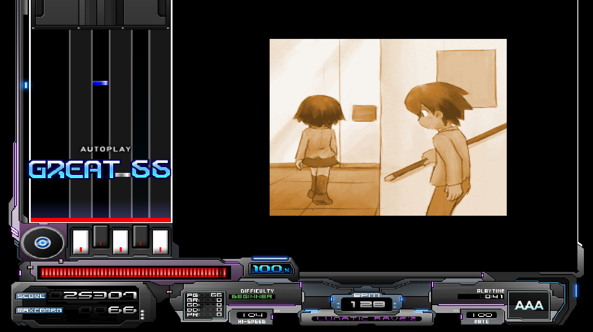
]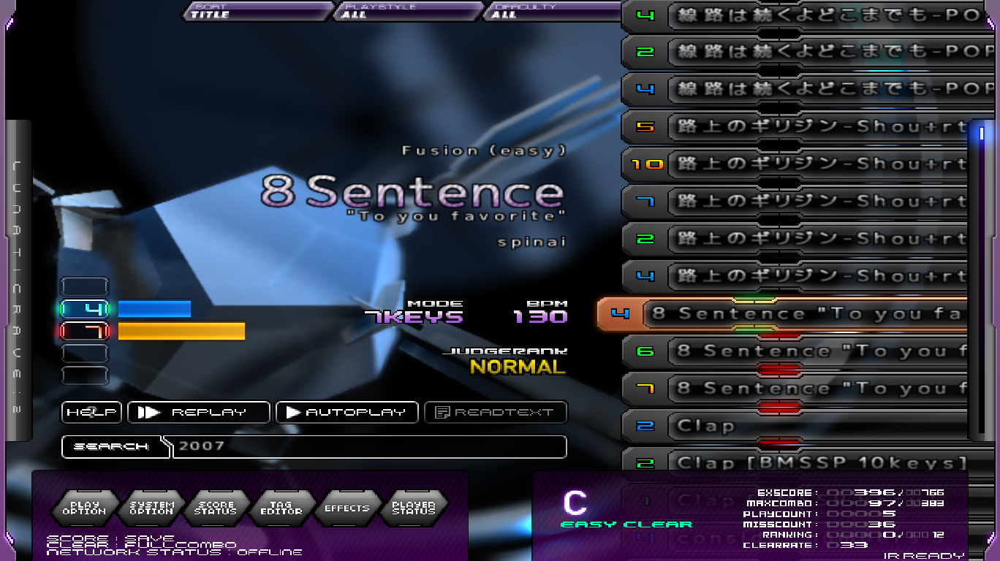
Internet Ranking with Bokutachi and LR2IR support
Compete with players around the world! RhythmGame supports has its own native IR server at https://rhythmgame.eu, but you can also submit your scores to Bokutachi and see the scores from the Lunatic Rave 2 Internet Ranking.
| Ranking | Online Stats |
|---|---|
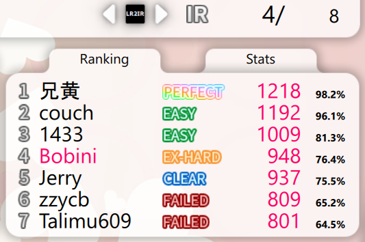 | 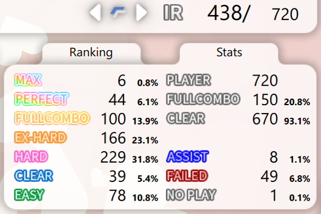 |
Rules based on Lunatic Rave 2
The timing windows and gauges match Lunatic Rave 2/Lr2oraja so you can compare your scores with those games easily.
Local battle mode
Play with a friend! Press start twice in song select to enable battle mode.
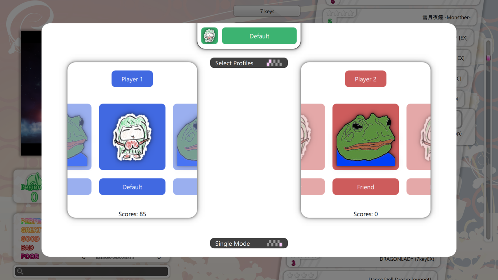
Table support
RhythmGame supports BMS tables natively. Simply paste a link in settings.
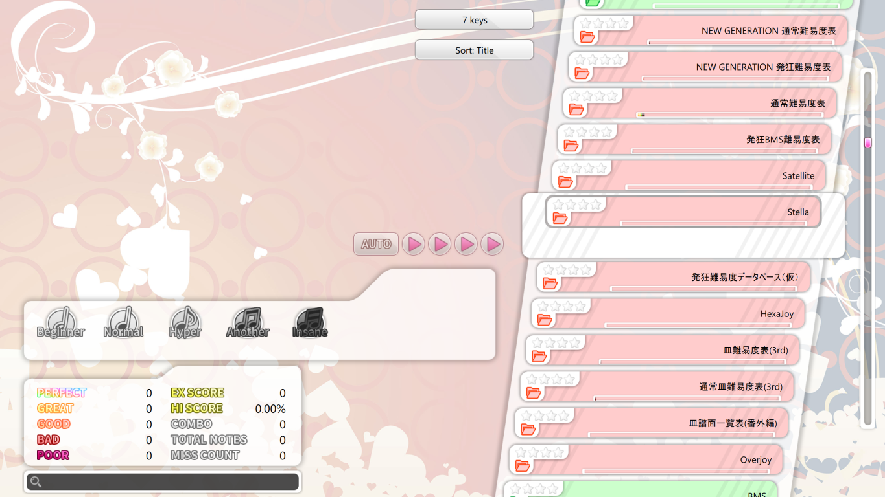
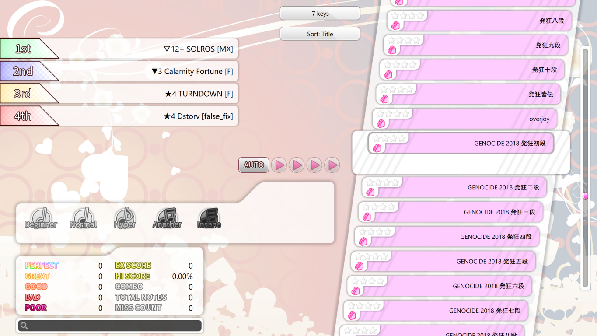
Smooth scaling
All resolutions supported! Press F11 to toggle fullscreen.
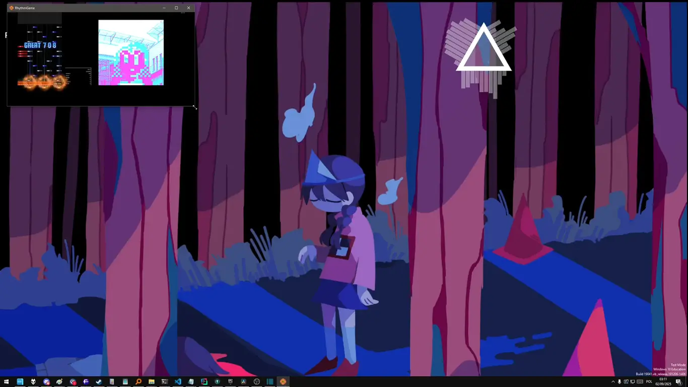
Translations
RhythmGame supports English, Polish and Simplified Chinese by default. Contact me if you would like to help translating it to your language!
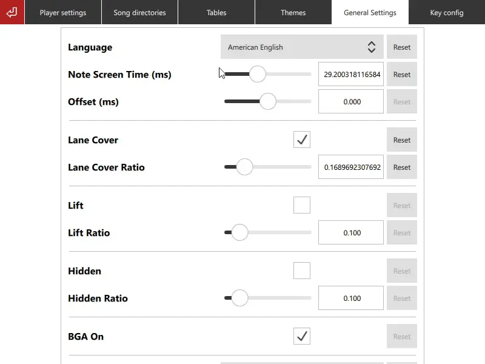
A beautiful default theme
Based on the works of Shimi999 and souki202, RhythmGame's default theme contains all the necessary features to play BMS.
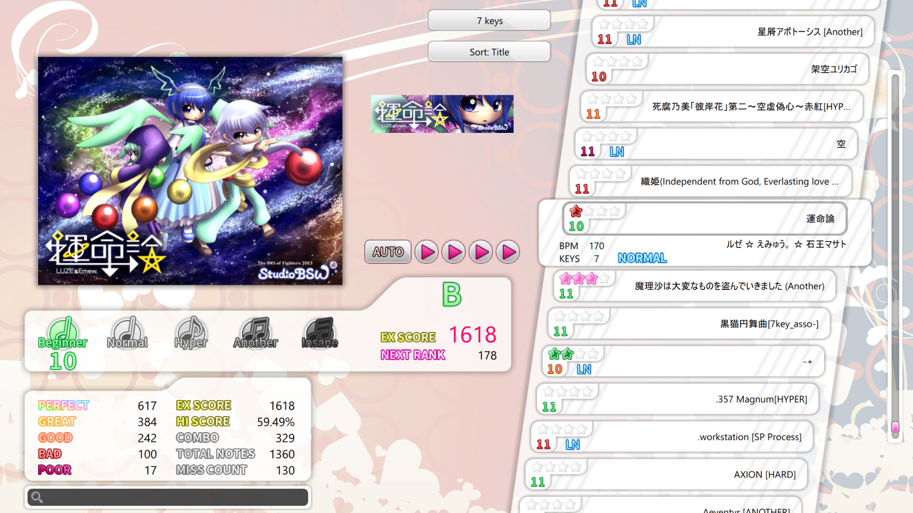
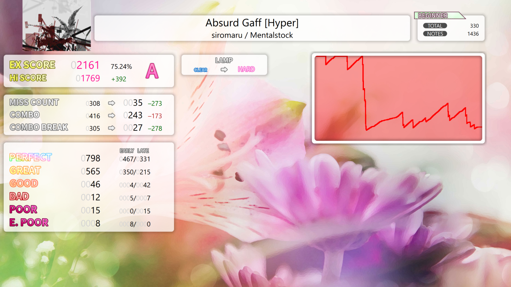
Asynchronous scanning of the song library
RhythmGame scans your song library in the background, so you can start playing immediately!
The game also supports loading songs from Backbeat. Give it a try!
Building and installing
See the DEV_ENGINE document.
Contributing
See the CONTRIBUTING document.
Licensing
The project is distributed under the MIT license.